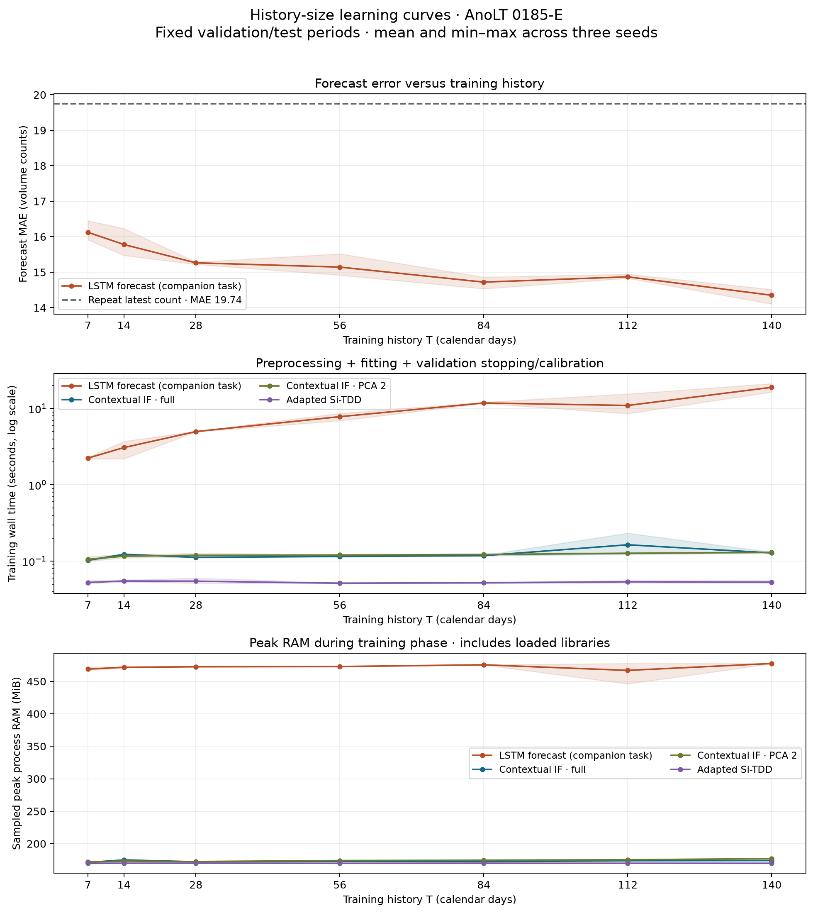
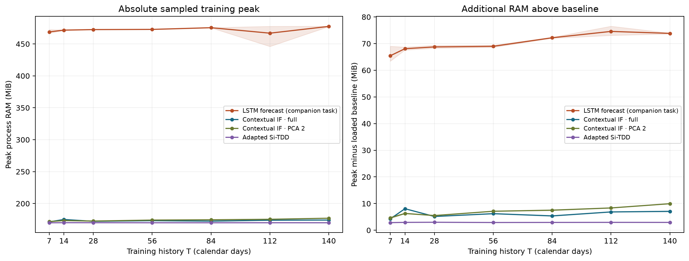
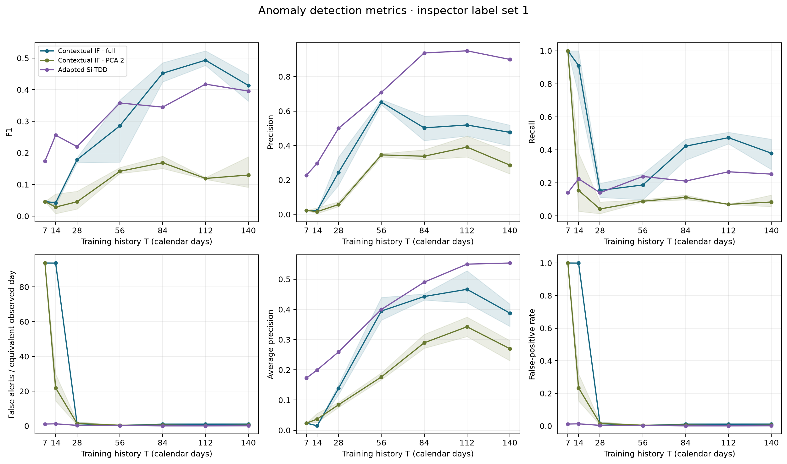
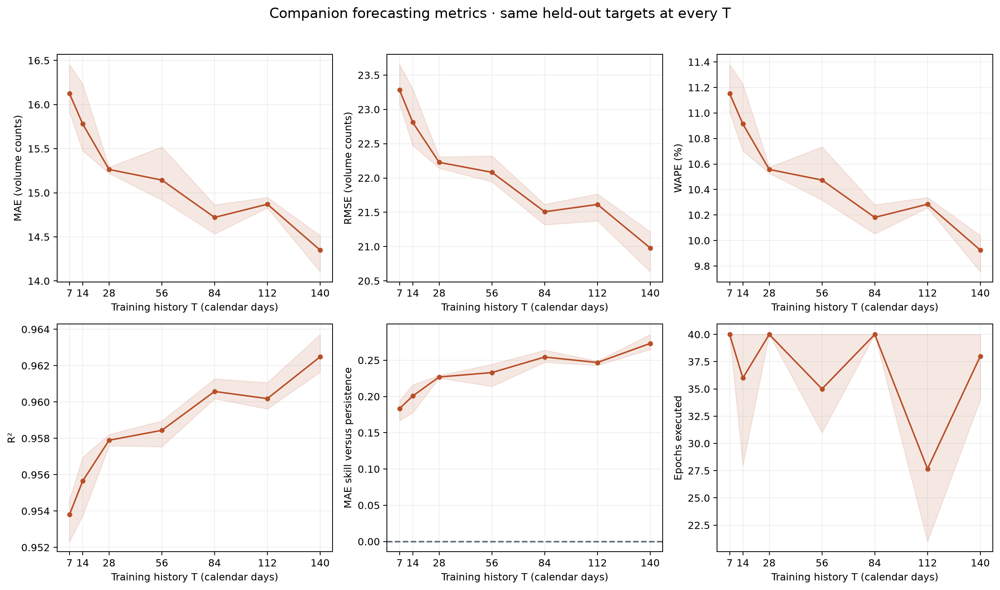

Calendar training history; mean and min–max across three seeds. Companion forecasting MAE and anomaly metrics are separate tasks.




| training_days | mae | rmse | training_seconds | training_peak_rss_mib | training_extra_rss_mib | epochs |
|---|---|---|---|---|---|---|
| 7 | 16.125 | 23.282 | 2.241 | 468.875 | 65.438 | 40.000 |
| 14 | 15.781 | 22.810 | 3.082 | 471.667 | 68.094 | 36.000 |
| 28 | 15.264 | 22.228 | 4.993 | 472.526 | 68.760 | 40.000 |
| 56 | 15.144 | 22.083 | 7.830 | 472.818 | 68.990 | 35.000 |
| 84 | 14.721 | 21.507 | 11.833 | 475.479 | 72.198 | 40.000 |
| 112 | 14.870 | 21.614 | 10.975 | 466.901 | 74.578 | 27.667 |
| 140 | 14.350 | 20.980 | 18.980 | 477.500 | 73.844 | 38.000 |
See the protocol and measurement notes, raw measured runs and verification.